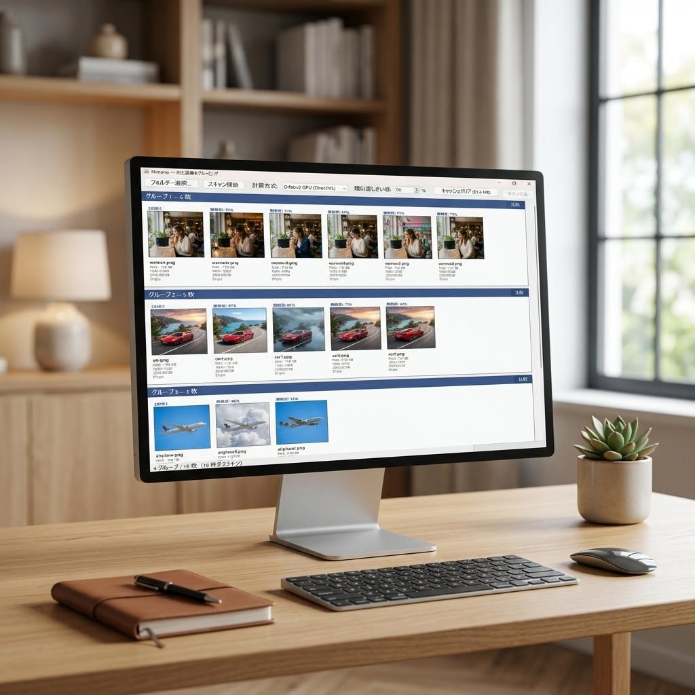
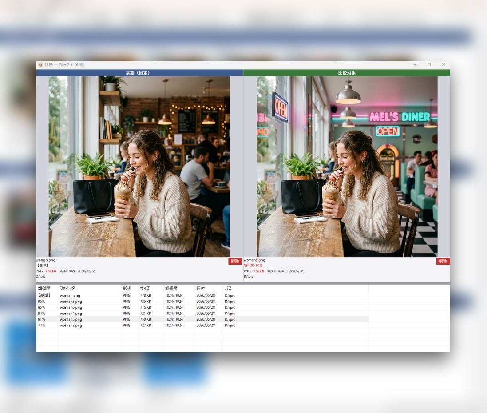

Nimonoは、AI（DINOv2）とハッシュ技術（pHash）を駆使し、 類似した画像を瞬時にグルーピング。直感的なUIと強力な比較機能で、 あなたの画像管理を劇的に進化させます。

最新のアルゴリズムと洗練されたUIが、かつてない体験を提供します。
Metaの最先端AIモデル「DINOv2」を搭載。DirectMLを利用したGPUアクセラレーションにより、圧倒的な速度と精度で画像の意味的特徴を抽出し、類似画像をグループ化します。
従来の手法である pHash もサポート。並列計算と SQLite キャッシュシステムを組み合わせることで、何万枚もの画像もあっという間に処理完了。再スキャンも一瞬です。
同期ズーム対応の画像比較画面を搭載。ファイル名や解像度、サイズなどの細かな差異を赤字でハイライト表示し、どちらを残すべきか瞬時に判断可能です。

比較画面では、基準となる画像と対象画像を常に50:50の割合で並べて表示。マウスホイールによるズームやドラッグでのパン操作は、左右で完全に同期されます。
Windows 10 (1709以降) / 11
.NET 9.0 (Windows Forms)
DINOv2 (ONNX Runtime, DirectML)
SQLite (ローカルキャッシュ)
JPG, PNG, BMP, GIF, TIFF, WebP
遅延パネル生成対応 (1万G+対応)
 Nimono
Nimono
Nimono
Nimono